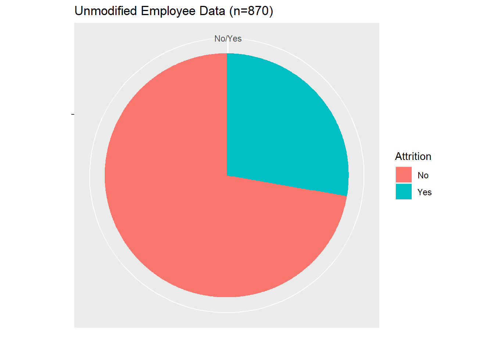
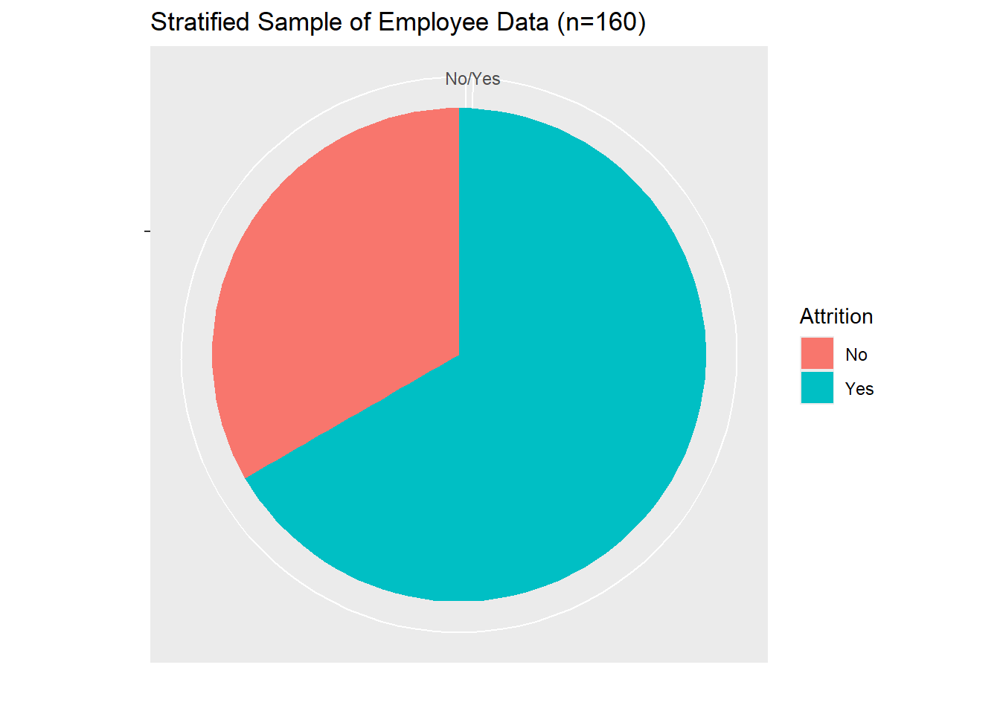

This report summarizes the findings of an analysis on employee attrition and monthly income prediction. The analysis focuses on the following topics:
During the Exploratory Data Analysis phase of our investigation, we determined there were several issues with the noise of the provided dataset. There were far more employees which had not experienced Attrition than those who had. This fact grievously affected our sensitivity and specificity rates, and yielded poorer models overall.
To deal with the unbalanced Attrition responses, we have used stratified sampling to create a more balanced dataset for model training. The stratified sampling ensures that we have a more equal representation of both “Yes” and “No” Attrition responses in our training data. This helps to improve the model’s performance when dealing with an unbalanced dataset.

Although it was difficult to see visually, we were able to rely on an external package called Infotheo, which we used to perform a Mutual Information assessment on columns and their relationship with Attrition. This Mutual Information checks for shared sets, and compares the difference between joint distributions and marginal distributions for each column when compared with Attrition.
Based on this analysis, we were able to determine the first several factors were:
MonthlyRate
MonthlyIncome
DailyRate
HourlyRate
Age
TotalWorkingYears
Overtime
Since several of these broke into Pay Rates, we determined to label this group as Pay Rates, and consider our top 3 factors to determine Attrition:
Monthly Income
Pay Rate
Age
# create a training dataset and testing dataset
trainIndex <- createDataPartition(employee_data$Attrition, p = 0.7, list = FALSE)
training_set <- data[trainIndex, ]
test_set <- data[-trainIndex, ]
# calculate mutual information for each predictor variable
mi <- apply(training_set[, -which(names(training_set) == "Attrition")], 2, function(x) infotheo::mutinformation(x, training_set$Attrition))
sort(mi, decreasing = TRUE)[3:9]## MonthlyRate MonthlyIncome DailyRate HourlyRate
## 0.43436251 0.42126240 0.37290118 0.07490117
## Age TotalWorkingYears OverTime
## 0.06028086 0.05221793 0.04653895# select the top three variables based on mutual information -- Top 3: MonthlyRate, MonthlyIncome, DailyRate
top_three_vars <- names(sort(mi, decreasing = TRUE))
top_three_vars[3:9]## [1] "MonthlyRate" "MonthlyIncome" "DailyRate"
## [4] "HourlyRate" "Age" "TotalWorkingYears"
## [7] "OverTime"From here, we wanted to determine the accuracy, specificity and sensitivity for which we could predict an employee’s likely Attrition. These factors would help determine our discrete predictions for future employees.
For the K-Nearest Neighbors approach, we were able to achieve an accuracy of 64%, with a sensitivity of 64.5% and a specificity of 62.9%.
training_set <- sample_data
testing_set <- employee_data
prediction_columns <- c("TotalWorkingYears", "DistanceFromHome",
"StockOptionLevel", "NumCompaniesWorked", "YearsAtCompany",
"YearsInCurrentRole", "JobSatisfaction", "TrainingTimesLastYear")
prediction_formula <- as.formula("Attrition~.")
k <- 5
predicted_attrition <- knn(training_set[, prediction_columns],
testing_set[, prediction_columns], training_set$Attrition, k)
confusionMatrix(predicted_attrition, testing_set$Attrition)## Confusion Matrix and Statistics
##
## Reference
## Prediction No Yes
## No 471 52
## Yes 259 88
##
## Accuracy : 0.6425
## 95% CI : (0.6097, 0.6744)
## No Information Rate : 0.8391
## P-Value [Acc > NIR] : 1
##
## Kappa : 0.1714
##
## Mcnemar's Test P-Value : <2e-16
##
## Sensitivity : 0.6452
## Specificity : 0.6286
## Pos Pred Value : 0.9006
## Neg Pred Value : 0.2536
## Prevalence : 0.8391
## Detection Rate : 0.5414
## Detection Prevalence : 0.6011
## Balanced Accuracy : 0.6369
##
## 'Positive' Class : No
## Using a Naïve-Bayes approach, we were able to achieve an accuracy of 63%, with a sensitivity of 60.1% and a specificity of 76.4%. However, since the K-Nearest Neighbors approach achieved a higher overall accuracy, we determined to primarily use this one for the remainder of our investigations.
nb_model <- naiveBayes(prediction_formula, data = training_set)
predicted_attrition <- predict(nb_model, newdata = testing_set[,prediction_columns])
# Evaluate the accuracy of the model
confusionMatrix(predicted_attrition, testing_set$Attrition)## Confusion Matrix and Statistics
##
## Reference
## Prediction No Yes
## No 439 33
## Yes 291 107
##
## Accuracy : 0.6276
## 95% CI : (0.5945, 0.6598)
## No Information Rate : 0.8391
## P-Value [Acc > NIR] : 1
##
## Kappa : 0.2096
##
## Mcnemar's Test P-Value : <2e-16
##
## Sensitivity : 0.6014
## Specificity : 0.7643
## Pos Pred Value : 0.9301
## Neg Pred Value : 0.2688
## Prevalence : 0.8391
## Detection Rate : 0.5046
## Detection Prevalence : 0.5425
## Balanced Accuracy : 0.6828
##
## 'Positive' Class : No
## Since Monthly Income was identified as a primary predictor for employee attrition, we wanted to determine if we could predict an employee’s monthly income as a response to the various other data collected on the employee. Using a simple linear regression, we were able to achieve an Root Mean Square Error (RMSE) of $3,911. This means that, on average, the predicted salaries by the model deviate from the actual salaries by approximately $3,911.
Although the top 3 factors associated with Monthly Income were Pay Rate and Age, we found better results from using alternative variables (Age, Daily Rate, Years At Company) in our model:
\(MonthlyIncome = {-3.16}e3 + (1.998e2)Age + (6.93e{-2})DailyRate + (3.08e2)YearsAtCompany\)
t.test(employee_data$MonthlyIncome)##
## One Sample t-test
##
## data: employee_data$MonthlyIncome
## t = 40.996, df = 869, p-value < 2.2e-16
## alternative hypothesis: true mean is not equal to 0
## 95 percent confidence interval:
## 6084.326 6696.203
## sample estimates:
## mean of x
## 6390.264mi2 <- apply(employee_data[, -which(names(employee_data) =="MonthlyIncome")], 2, function(x) infotheo::mutinformation(x,employee_data$MonthlyIncome))
top_vars <- names(sort(mi2, decreasing =TRUE))
top_vars[3:9]## [1] "MonthlyRate" "DailyRate" "HourlyRate"
## [4] "Age" "TotalWorkingYears" "DistanceFromHome"
## [7] "YearsAtCompany"trainIndex <-createDataPartition(employee_data$YearsAtCompany, p = 0.7, list = FALSE)
lm_train <- employee_data[trainIndex, ]
lm_test <-employee_data[-trainIndex, ]
lm_model <- lm(MonthlyIncome ~ Age + DailyRate + YearsAtCompany, data = lm_train)
predictions <- predict(lm_model, newdata = lm_test)
rmse <- rmse(predictions, lm_test$MonthlyIncome)
rmse## [1] 3911.525